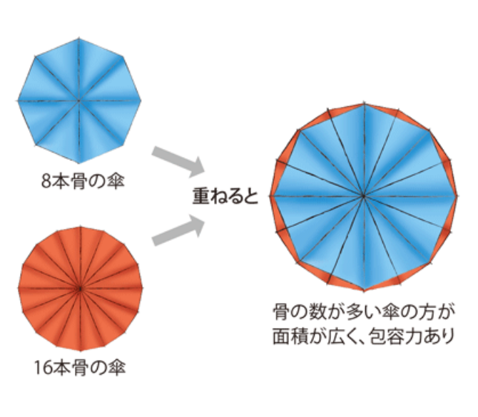
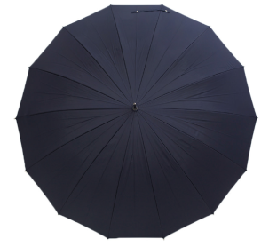
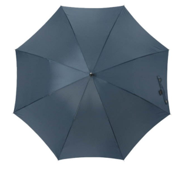
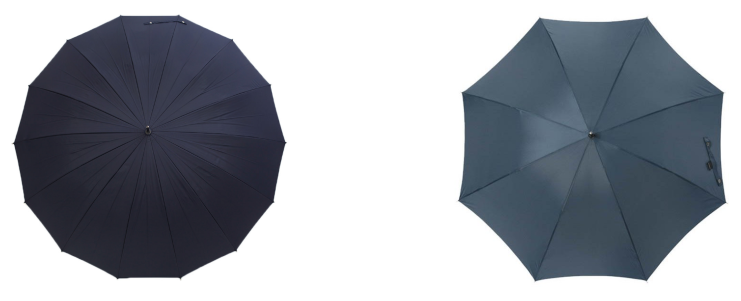
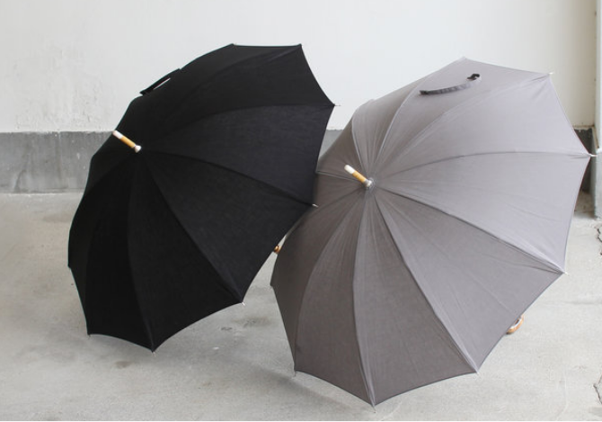
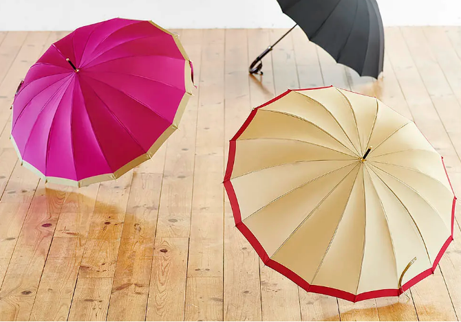
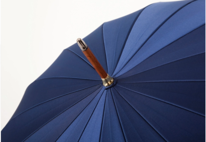
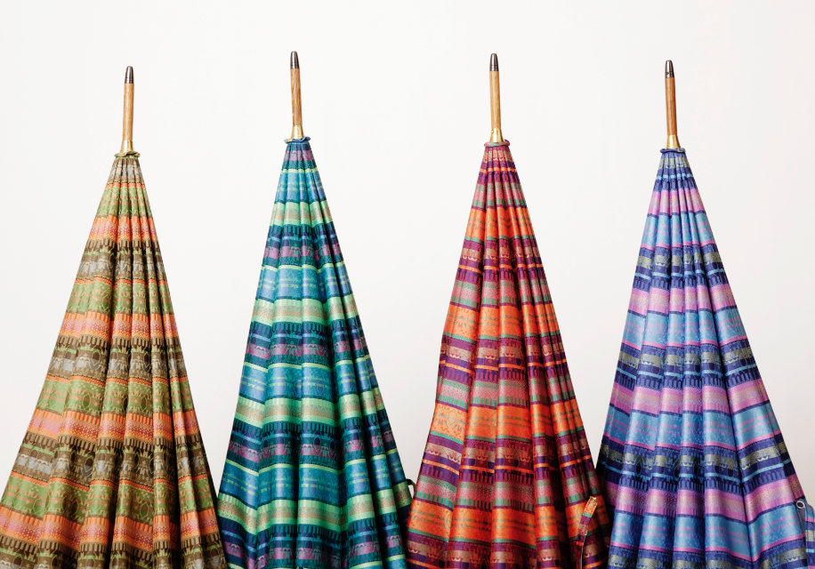

傘の贈り物
傘=消耗品というイメージの多い中、前原の傘は 使うほどに味わいを増し、経年変化を楽しむことのできるアイテムです。
普段鞄や靴、小物類などにこだわりを持ってお使いの方へ、傘の贈り物はいかがでしょうか。
傘の選び方ガイド
-
POINT1 骨の本数で選ぶ
傘の面積は「骨の長さ×本数」で決まります。
紳士用雨傘では、60cmの骨をメインで取り扱っていますが、一般的に60cmと聞くと「すこし小さいかも...」と心配になる方もいらっしゃるかと思います。
しかし、傘の面積は「骨の長さ×本数」で決まる ということがポイント。
60cm×16本の傘の面積は、65cm×8本の傘の面積とほぼ同じです。
つまり骨が多いことで長さを抑えて面積を広くすることができるという利点があるのです。骨ばかり長くて大きい傘は、広げてさすと少しバ ランスが悪く不格好になりがち。
身長の高い方やお荷物が多い方などには65cm×16本の傘をおすすめしますが、特にそうでない限りは60cm×16本、または65cm×8本の傘でも十分雨風はしのいでくれますのでご安心ください。 -
POINT2 傘のシルエットで選ぶ
骨の数で、与える印象もかわります。
骨の本数が多いことで傘を開くと円形に近くなり、華やかで安定感のあるシルエットになります。
逆に骨が少ないとスッキリとした8角形になり、傘を閉じると細巻きになるのでスタイリッシュで華奢なシルエットになります。
お好みに応じてお選びください。  -
POINT3 傘の色で選ぶ
雨空の下で使用することをイメージしましょう。
何色の傘を贈るかお悩みの方へ、大きく分けて2パターンで考えてみてはいかがでしょうか。
1. いつでも使いやすいブラックやネイビーなど落ち着いた色で選ぶ。
2. ご本人は選ばないかも知れないけど、とても似合うと思うおもいきった色で選ぶ。  もちろん落ち着いた色の傘は場所や服装を選ばずとても使いやすいアイテムです。
ただ「少し派手すぎるかな?」と思うような色でも、実際に使用するのは雨空の下なので、ワントーン落ち着いた印象になります。
少しでも気分を盛り上げてくれるようなお色の傘を贈るのも、とってもおすすめです。
シーン別のおすすめ
長寿のお祝い（傘寿など）
傘は広げると末広がりなシルエットになるため、縁起物として贈答品には最適です。
中でも還暦や傘寿のお祝いなどの長寿祝いに御造いいただくことも多くあります。
特に傘寿(80歳のお祝い)は文字通り「傘」が入っているため洒落っ気をプラスした贈答品ともなります。
おすすめとしては、実用性を考慮したカーボン素材の軽めの傘や、折りたたみ傘。
傘寿の色は濃黄色(山吹色から黄金色)ということなので、イエロー系をお選びになるとよりぴったりですね。
ご退職記念
数名の有志様でのご注文で、退職お祝い(記念)のご注文も多く承っております。
お仕事がひと段落し、これから第二の人生を楽しんでいただきたいという思いも込めて、
ストライプや無地のようなピジネス的なものよりは、よりカジュアルな柄行きのものをおすすめしております。
少し個性的な手元を組み合わせるのも、楽しいギフト選びのポイントかもしれません。
お誕生日祝い
日々お仕事や家事など、頑張っているパートナーや家族へのお誕生日プレゼント。
毎年何をあげようか悩むところですが、今年は傘にしてはいかがでしょうか。
インパクトやサプライズ要素を大切にされる方へは、広げると内側が色違いや華やかな柄が現れる両面織りの傘。
またディテールにこだわる方には、中棒や石突など細部まで素材の仕上げに手をかけた傘。
シンプルなものから重厚感あるものまで、様々なタイプの傘をご用意しております。
ギフトボックス
大切な方への贈り物ヘギフトボックスをご用意しております。
お箱に入れ弊社トンボロゴマークの包装紙にて包装いたします。
持ち運び用の「手提げ袋」もおつけできますので、必要な場合はご注文時にご指定ください。
熨斗紙のご用意もございますのでご利用の際はご注文時にご指示ください。
納期について
ご注文いただいた順に、一本一本彫刻機で加工をしておりますため、
名入れ加工のご注文につきましては、発送までに数日いただく場合がございます(最長10営業日)。
お渡しする日が決まっている方は、十分な余裕を持ってご注文ください。